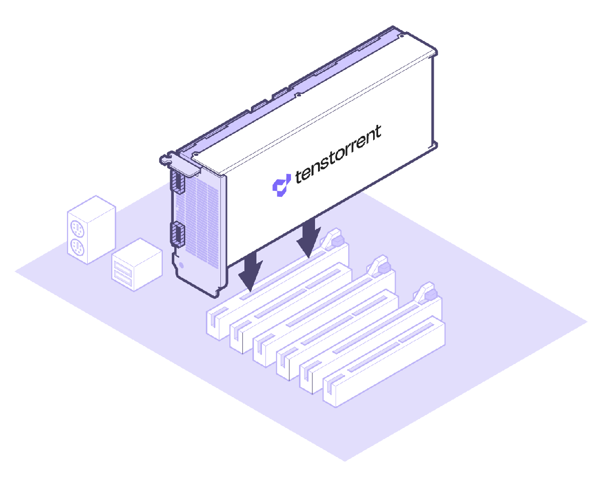
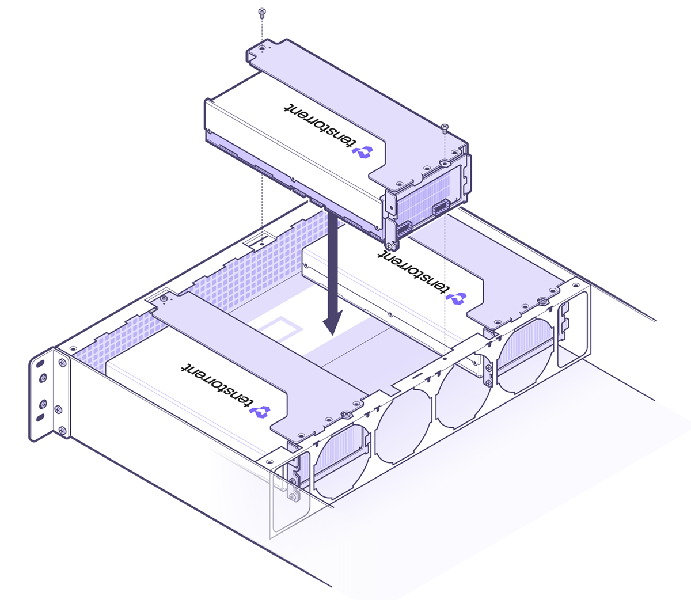
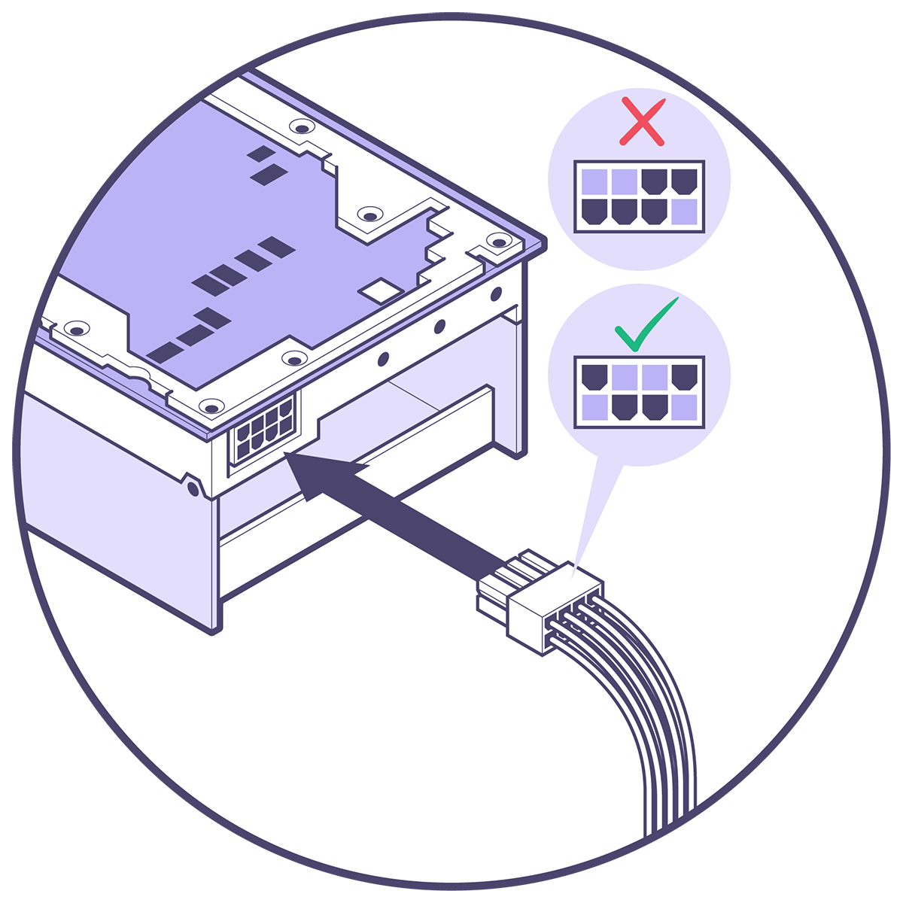

Hardware Installation
Follow these instructions to install your Tenstorrent Wormhole™ n150d/n150s/n300d/n300s add-in board.
System Installation
Pre-Installation
Disconnect power to the host computer prior to installation.
Verify that the system provides the following:
PCI Express 4.0 x16 slot
For optimal performance, the card requires a x16 configuration without bifurcation.
The n150s and n300s are dual-slot width cards and will require the adjacent expansion slot to be vacant if you’re using the Active Cooling Kit.
The n150d and n300d are 2.5-slot width cards with axial fan coolers. Please ensure your chassis has sufficient airflow to exhaust the heat from these cards.
One (1) EPS12V 4+4-pin power connector
Discharge your body’s static electricity by wearing an ESD wrist strap (recommended) or touching a grounded surface before touching system components or the add-in card.
Desktop Workstation Installation
(NOTE: Images shown may not be fully representative of your system. n150s/n300s cards pictured; n150d/n300d will look different.)
Physical Installation
Insert the card into the PCIe x16 slot and secure with necessary screws.

Server Installation (n150s/n300s Only)
(NOTE: Images shown may not be fully representative of your system.)
1. Attach Housing
House the card in the casing.

2. Card Installation
Lower the encased card into the chassis and secure with the required screws.

Connecting Power
Connect an 4+4-pin EPS12V power cable to the 8-pin plug. (NOTE: Do not connect a 6+2-pin PCIe power cable to the 8-pin port on the card.)

Software Setup
Instructions on how to set up software on your n150d/n150s/n300d/n300s are available here.